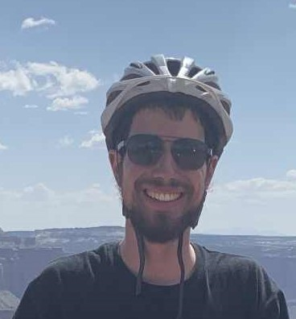

My name is Assaf Bar-Natan, and I am a graduate student in mathematics at the University of Toronto. I specialize in low dimensional topology and Teichmuller theory, under the supervision of Kasra Rafi.
This website is broadly split into three parts: teaching and teaching resources, acadmic papers and ideas, and blogging (mostly about biking, but also about teaching). Enjoy!
|
Sarah Usick Department of Fine Arts Concordia Office: 215 Huron, tenth floor, #1029 Email: assaf.bar.natan@mail.utoronto.ca CV Papers (research) Math Blog (research) Teaching Bike Rides Blog (not research) Zines (definitely not research) |
 Don't like this picture? Click to change it. |